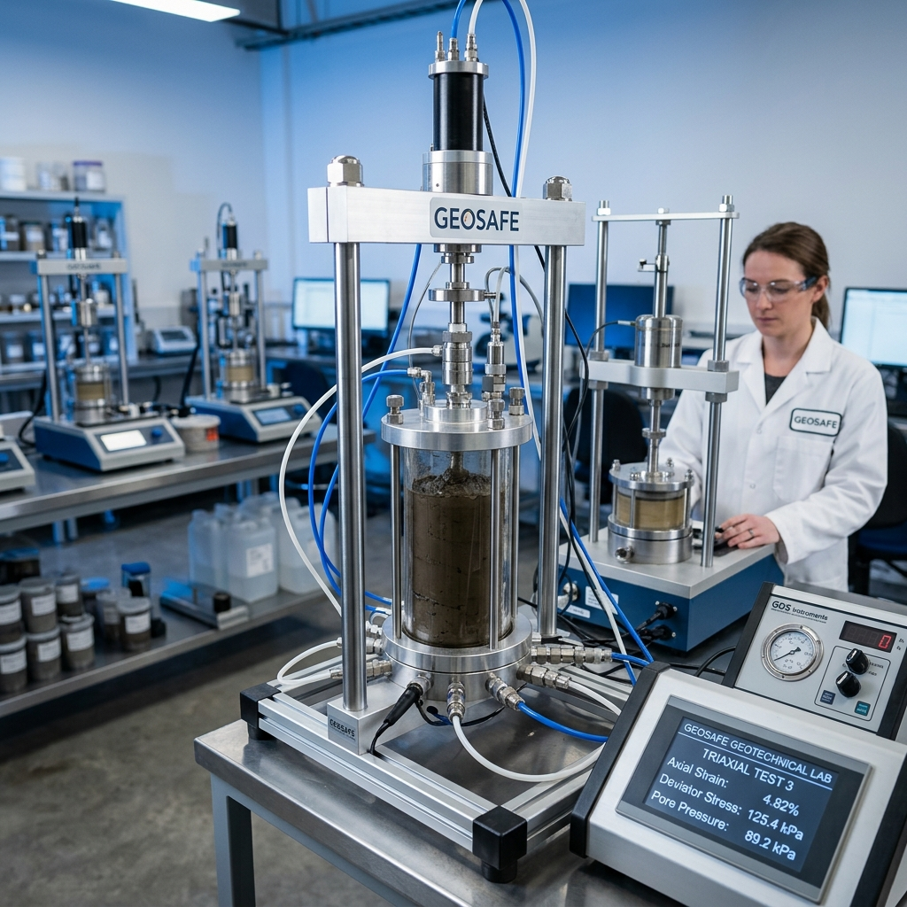

Nos Réalisations & Engagements
GEOSAFE s'implique activement dans les grands projets d'infrastructure et la formation technique nationale.


GEOSAFE accompagne les architectes, promoteurs et acteurs publics dans la sécurisation et l'optimisation de leurs structures. "Build on certainty."
Des solutions géotechniques sur mesure, fondées sur la précision scientifique et la maîtrise des risques.
Conception et recommandations pour fondations superficielles et profondes, adaptées à la nature de votre sol.
Analyse de la stabilité des pentes, des ouvrages en terre et évaluation du risque sismique complexe.
Sécurisation des excavations en milieu urbain dense par des techniques de parois et tirants d'ancrage.
Expertise spécialisée pour les projets portuaires et les infrastructures en milieu côtier (SIPORTS 2026).
Ingénierie géotechnique pour les terrassements routiers et les fondations de ponts et viaducs.
Campagnes d'essais in-situ et analyses rigoureuses en laboratoire pour caractériser vos terrains.
"La sécurité d'un ouvrage commence par la compréhension physique de son assise."
Notre laboratoire est équipé des dernières technologies pour la mesure des propriétés mécaniques et physiques des sols. Nous réalisons des essais triaxiaux, de consolidation et de cisaillement direct avec une précision métrologique absolue.
Chaque prélèvement est analysé selon les normes internationales les plus strictes, garantissant des données fiables pour vos modèles de calcul.

GEOSAFE s'implique activement dans les grands projets d'infrastructure et la formation technique nationale.
Confiez vos études de sol à des experts. Remplissez le formulaire ci-dessous pour une demande de devis personnalisée.